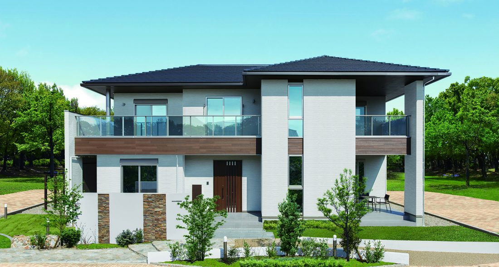
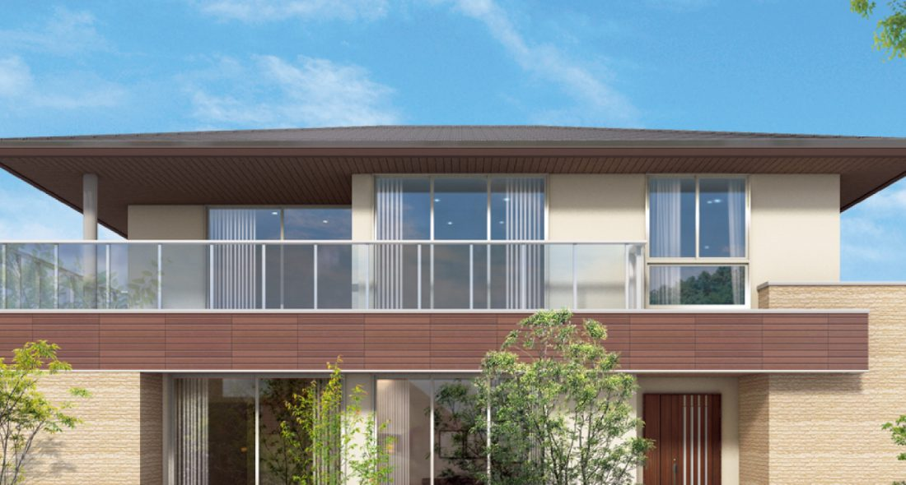
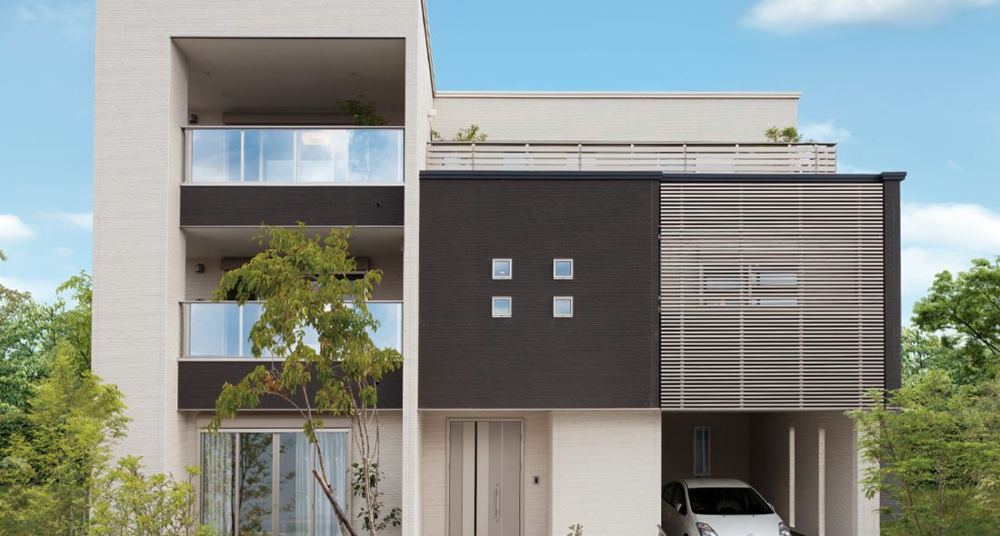
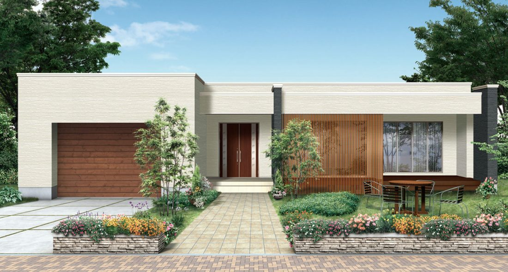
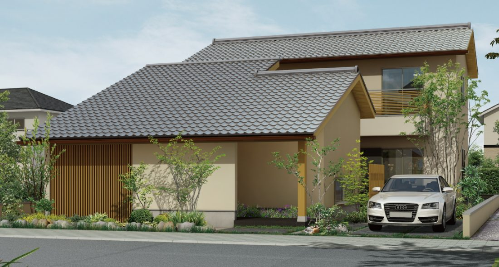
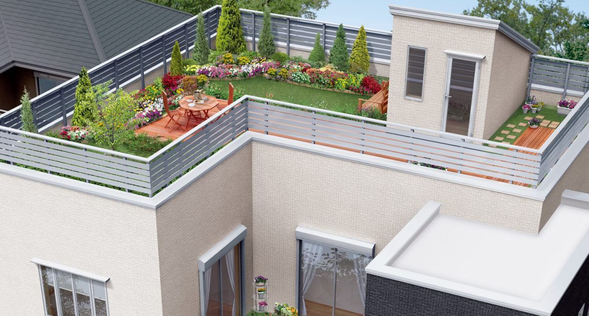
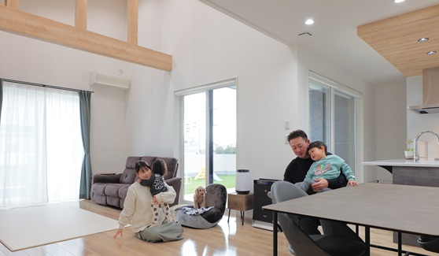
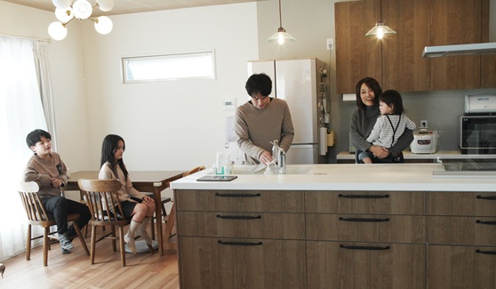

① 会社・基本データ
タマホームは1998年設立、2025年5月期売上高約2,008億円の東証プライム上場ハウスメーカー。「良質低価格」をスローガンに掲げ、ローコスト住宅の代名詞として知られる。年間約1万棟の販売力と業界トップクラスの広域展開（全47都道府県対応）が最大の特徴。
| 項目 | 内容 |
|---|---|
| 会社名 | タマホーム株式会社（Tama Home Co., Ltd.） |
| 設立 | 1998年6月3日（前身は筑後興産株式会社・1978年設立） |
| 創業者 | 玉木康裕（現代表取締役会長） |
| 代表取締役社長 | 玉木伸弥 |
| 本社 | 東京都港区高輪三丁目22番9号（登記上の本店は福岡県筑後市） |
| 資本金 | 43億円（43億1,014万円・2025年5月31日現在） |
| 証券コード | 東証プライム 1419 |
| 売上高 | 約2,008億円（2025年5月期通期・前期比18.9%減） |
| 2026年5月期計画 | 売上高2,300億円、営業利益90億円、純利益60億円 |
| 従業員数 | 3,272名（2025年5月31日現在） |
| 年間販売戸数 | 約8,700棟（2026年5月期計画） |
| 対応エリア | 沖縄県を含む全国47都道府県 |
| 拠点数 | 全国約240店舗以上 |
| Instagram公式 | @tamahome_official（フォロワー約70.5万人） |
事業ポジション
- 業界ランキング：注文住宅戸建着工棟数で常時TOP5〜7圏（2024年は約9,386棟で業界6位）
- 中期経営計画「タマステップ2026」：従来の受注1.5万棟目標から1.05万棟に下方修正（2025年4月発表）。建築コスト高騰と価格上昇による受注減が主因
関連事業
- 注文住宅（主力）、分譲住宅、賃貸物件、不動産仲介、リフォーム
- 保険代理店事業、金融商品仲介業
- 海外事業（マレーシア・台湾等で展開実績）
「タマホーム体操」と広告塔
TVCM・店頭で流れる「タマホーム体操」（木村拓哉氏が長年イメージキャラクター）は認知度向上に貢献。広告宣伝費は売上比で大手HMの中では中位〜高位。年間100億円規模の広告投下が坪単価の一部に反映されているとの見方もある。
一言で言うと？
「良質低価格」をスローガンに掲げる、ローコスト住宅の代名詞。年間約1万棟の販売実績で大量仕入れによるコストダウンを実現し、耐震等級3・断熱等性能等級5を標準化。20-30代の共働き世帯から圧倒的支持を得るハウスメーカー。
② 商品ラインナップと坪単価
主力ブランド「大安心の家」シリーズ
| 商品名 | 坪単価目安（2026年） | 特徴 |
|---|---|---|
| 大安心の家 | 50〜70万円 | 主力商品。耐震等級3・断熱等性能等級5を標準。長期優良住宅対応 |
| 大安心の家[愛] | 55〜75万円 | 2024年以降の現行ラインナップ。標準仕様を整理した主力系列 |
| 大安心の家[愛]PREMIUM | 60〜80万円 | 上位版。外壁グレードUP・サッシ拡大・制震ダンパー標準化 |
| 大安心の家[暖] | 55〜75万円 | 寒冷地対応。標準で高断熱仕様 |
| 大安心の家[暖]PREMIUM | 60〜80万円 | 断熱特化・寒冷地向け上位版 |
| 大地の家[1・2地域] | 60〜80万円 | 北海道・東北向け寒冷地仕様 |


エントリー〜中位ライン
| 商品名 | 坪単価目安（2026年） | 特徴 |
|---|---|---|
| 木麗な家（きれいなけ） | 42〜55万円 | エントリー商品。断熱等級4標準だが等級5へグレードUP可 |
| 木望の家（きぼうのいえ） | 55〜70万円 | 3階建て対応。狭小地・都市型向けのフラッグシップ |
| GALLERIART（ガレリアート） | 50〜65万円 | 平屋＋ビルトインガレージの個性派。デザイン重視層向け |


デザイン・性能特化ライン
| 商品名 | 坪単価目安（2026年） | 特徴 |
|---|---|---|
| 和美彩（わびさい） | 55〜75万円 | 構造躯体の国産木材使用率100%。和モダンデザイン特化 |
| 笑顔の家（えがおのいえ） | 70〜90万円 | 2023年4月発売のフラッグシップ。UA値0.23W/m²K・断熱等級7（HEAT20 G3水準）。タマホーム史上最高性能 |
| シフクノいえ | 65〜85万円 | 省エネ補助金活用層向け。標準では長期優良住宅非対応との情報あり。最新仕様は営業要確認 |


坪単価の実勢と平均
| 年 | 全体平均坪単価 | 備考 |
|---|---|---|
| 2022年 | 約55万円 | ウッドショック前の実勢 |
| 2023年 | 約60万円 | 資材高騰で上昇開始 |
| 2024年 | 約64万円 | 値上げ継続 |
| 2025年 | 約68.4万円 | 平均値（施主アンケートベース） |
| 2026年 | 約71万円 | オプション含む実勢平均 |
2026年の実勢レンジ
- 最安値ライン：約42万円/坪（木麗な家・最低仕様）
- 最高値ライン：約106万円/坪（笑顔の家・フルオプション）
- ボリュームゾーン：55〜75万円/坪（大安心の家シリーズ）
坪単価に含まれないもの（要注意）
本体工事費以外の「付帯工事費・諸経費」は以下が別途発生：
- 地盤改良費：50〜120万円
- 外構工事費：100〜250万円
- 屋外給排水工事：30〜60万円
- 登記・税金・住宅ローン諸費用：100〜150万円
- カーテン・照明・エアコン：50〜100万円
→ 最終的に坪単価×坪数以外に+500〜800万円は必要
③ 構造・耐震性能
木造軸組在来工法（主力構法）
タマホームは日本伝統の木造軸組在来工法を採用。柱と梁で構成し、設計自由度が高い。
| 項目 | 詳細 |
|---|---|
| 工法 | 木造軸組在来工法（在来工法） |
| 耐力面材 | 構造用合板を柱・梁に直張り。筋交いとの併用で面・線の両方で耐震性確保 |
| 剛床工法 | 1階・2階の床に24mm厚の構造用合板を土台や梁に直接固定。横からの力への強度は一般的な根太工法の約2倍 |
| 金物工法 | 柱と梁の接合部をホールダウン金物・羽子板ボルト等で補強 |
| 基礎 | ベタ基礎標準。コンクリートはJASS5基準（計画共用期間65年）に準拠 |
耐震等級
| 項目 | 内容 |
|---|---|
| 耐震等級 | 等級3（最高等級）を標準 |
| 等級3の意味 | 数百年に一度発生する地震（震度6強〜7）の1.5倍の力でも倒壊・崩壊しないレベル（消防署・警察署と同等） |
| 計算方法 | 許容応力度計算 または 住宅性能表示制度の壁量計算 |
| 制震ダンパー | 大安心の家 PREMIUM以上は標準装備。大安心の家はオプション |
| 地盤調査 | スウェーデン式サウンディング試験（SS試験）を全棟実施 |
耐震等級3の「実力」の見極め方
「耐震等級3」と一口に言っても、以下の2通りがある。
- 許容応力度計算（精度高、構造計算書を伴う）：信頼性◎
- 壁量計算（簡易計算、性能表示制度の範囲）：信頼性○
タマホームは商品・地域により両方のケースがある。担当営業に「計算書を見せてほしい」と依頼することで見極め可能。
他社との構造比較
| 構法 | 採用HM | 特徴 | タマホーム比 |
|---|---|---|---|
| 木造軸組在来 | タマホーム・住友林業・積水ハウス（一部）・三井ホーム（一部） | 設計自由度◎、職人技術で差が出やすい | 基本 |
| 2×4（ツーバイフォー） | 三井ホーム・ミサワ | 面で支えるモノコック、耐震性◎ | 設計自由度はやや劣る |
| 2×6（ツーバイシックス） | 一条工務店 | 壁厚140mm、断熱・耐震ともに◎ | 壁厚・断熱で大差 |
| 鉄骨造 | 積水ハウス・ヘーベル・ダイワ | 耐火・大空間◎ | 木造のため快適性は異なる |
④ 断熱性能
UA値・断熱等級（商品別）
| 商品 | UA値（地域6） | 断熱等級 |
|---|---|---|
| 笑顔の家 | 0.23 W/m²K | 等級7（最高・HEAT20 G3水準） |
| シフクノいえ | 公式非公表 | HEAT20 G2水準・UA値0.46は公式エビデンス未確認 |
| 大安心の家[暖]PREMIUM | 0.46 W/m²K | 等級6 |
| 大安心の家 PREMIUM | 0.52 W/m²K前後 | 等級5 |
| 大安心の家（標準） | 約0.52〜0.60 W/m²K | 等級5（試算ベース） |
| 木麗な家（標準） | 約0.87 W/m²K | 等級4（オプションで等級5可） |
| （参考）国の省エネ基準 | 0.87 W/m²K | 等級4 |
主力「大安心の家」の断熱仕様詳細
| 部位 | 仕様 | 厚さ |
|---|---|---|
| 壁 | 高性能グラスウール16K（充填断熱） | 105mm |
| 天井 | 高性能グラスウール16K | 210mm |
| 床 | 押出法ポリスチレンフォーム3種b | 65mm |
| 窓 | Low-E複層ガラス＋アルミ樹脂複合サッシ（アルゴンガス封入） | - |
「笑顔の家」の断熱仕様（フラッグシップ）
| 部位 | 仕様 | 厚さ |
|---|---|---|
| 壁（外側） | 硬質ウレタンフォーム（付加断熱） | 45mm |
| 壁（内側） | 高性能グラスウール | 105mm |
| 天井 | 吹込みグラスウール | 300mm以上 |
| 床 | 押出法ポリスチレンフォーム | 100mm |
| 窓 | トリプルガラス樹脂サッシ | - |
UA値0.23W/m²Kは一条工務店のグランスマート（UA値0.25）を上回る数値。ローコスト系の常識を覆す性能。
地域区分別の仕様差
タマホームは地域区分（1〜8）で仕様を変更：
- 1〜2地域（北海道）：大安心の家[大地]・[暖]が中心。壁140mm断熱
- 3〜4地域（東北・長野等）：[暖]グレードで対応
- 5〜6地域（関東・中部・関西）：大安心の家標準仕様（UA値0.6前後）
- 7地域（九州・四国）：標準仕様で等級5クリア
- 8地域（沖縄）：断熱より遮熱重視の仕様
他社との断熱性能比較（同価格帯）
| メーカー | 代表商品UA値 | 断熱等級 | 坪単価帯 |
|---|---|---|---|
| タマホーム（笑顔の家） | 0.23 | 等級7 | 70〜90万 |
| タマホーム（大安心） | 0.52〜0.60 | 等級5 | 50〜70万 |
| アイフルホーム（セシボ極） | 0.40 | 等級6 | 55〜70万 |
| レオハウス | 0.60 | 等級5 | 55〜70万 |
| ヒノキヤグループ | 0.46 | 等級6 | 60〜75万 |
| ユニバーサルホーム | 0.60 | 等級5 | 50〜65万 |
ポイント：ローコスト帯では「大安心の家」の等級5（UA値0.52〜0.60）は標準的。一方フラッグシップの「笑顔の家」は業界トップクラス。予算と性能のバランスで商品を選ぶのがコツ。
⑤ 気密性能
C値（相当隙間面積）
| 項目 | 内容 |
|---|---|
| 公式の標準C値 | 非公表（保証値なし） |
| 気密測定の全棟実施 | なし（希望者オプション） |
| 笑顔の家 | 約0.5〜0.7 cm²/m²（実測報告） |
| 大安心の家 | 1.0〜2.0 cm²/m²（実測報告・現場による） |
| 一般住宅の目安 | 2.0〜5.0 cm²/m² |
気密性能の実態
- タマホームは断熱等級は公表するが、C値は公式保証値を明示していない
- 気密測定は希望者のみのオプション（1棟あたり3〜5万円）
- 現場（大工）の施工精度によってC値のバラつきが大きい
- 「笑顔の家」はC値0.7以下を目標とする施工マニュアルがあるとされるが、全棟測定・全棟開示はしていない
他社との気密比較
| メーカー | 全棟C値測定 | 平均C値 |
|---|---|---|
| 一条工務店 | 全棟実施・開示 | 0.59 cm²/m² |
| スウェーデンハウス | 全棟実施・開示 | 0.77 cm²/m² |
| FPの家 | 全棟実施・開示 | 0.50以下 |
| タマホーム | オプション | 非公表 |
| 住友林業・積水ハウス・三井ホーム・ヘーベル | 実施せず or 希望者のみ | 非公表 |
ARCHIST視点：気密性能にこだわるなら、大安心の家では物足りない。笑顔の家かシフクノいえにグレードUPし、かつ「気密測定オプション」を必ず付けること。測定値が1.0以下にならない現場は補修を要求できる。
⑥ 換気・空調システム
標準の換気方式
| 項目 | 内容 |
|---|---|
| 換気方式 | 第三種換気（排気のみ機械、給気は自然）が標準 |
| メーカー | 三菱電機・パナソニック等の汎用品 |
| 電気代 | 月200〜500円程度（最安水準） |
| デメリット | 冬の冷気流入、PM2.5・花粉は対策が限定的 |
第一種換気（オプション）
| 項目 | 内容 |
|---|---|
| 機種 | 全熱交換型換気システム（パナソニック・三菱等） |
| 熱交換効率 | 70〜80%程度（一般的な第一種換気の水準） |
| 追加コスト | 30〜80万円のオプション |
| メリット | 冷気流入防止、熱ロス削減、花粉・PM2.5高除去率 |
全館空調（高額オプション）
- タマホームは全館空調を標準装備する商品はなし
- 希望者はオプションで「全館空調システム」を後付け可能（ヒノキヤの「Z空調」のような専用システムは非提供）
- エアコン単体での個別空調が基本
床暖房
- タマホームの主力商品は床暖房が標準ではない
- 「大安心の家」等でオプションとして設置可能（リビング部分のみが一般的）
- 全館床暖房は一条工務店の専売特許的な機能
ARCHIST視点：「全館快適」を求めるなら第一種換気＋高断熱仕様（笑顔の家orシフクノいえ）へのグレードUPは必須。標準仕様のままでは換気・空調は「ごく普通の家」の水準。
⑦ デザイン
外観デザインの特徴
強み
- シンプル・清潔感のある現代的な外観
- サイディング・タイル・塗り壁から選択可能（商品による）
- Instagram公式（@tamahome_official フォロワー70.5万人）で実例多数
弱み
- デザインのオリジナリティは低め（住友林業・三井ホームのような強い個性は薄い）
- 「建売っぽい」「どこの家も似ている」という施主の声もあり
- 外壁オプションで個性を出そうとすると追加費用が膨らむ
内装・設備メーカー
タマホームは設備メーカーを絞り込んで大量仕入れでコスト削減：
| カテゴリ | 採用メーカー（標準選択） |
|---|---|
| キッチン | LIXIL・TOTO・パナソニック・クリナップ |
| ユニットバス | LIXIL・TOTO・パナソニック |
| 洗面化粧台 | LIXIL・TOTO |
| トイレ | TOTO・LIXIL |
| 床材 | 朝日ウッドテック・DAIKEN・大建工業 |
| ドア | 大建工業・LIXIL |
ポイント：国内一流メーカーの製品で、品質的に見劣りはしない。ただし「選択肢」は大手HMより限定的。
商品別のデザイン傾向
| 商品 | デザイン傾向 |
|---|---|
| 大安心の家 | 万人向け・無難なシンプル系 |
| 大安心の家 PREMIUM | やや高級感を加えた現代風 |
| 和美彩 | 和モダン・ひのき無垢材を活かした落ち着いた空間 |
| GALLERIART | 平屋＋ビルトインガレージの個性派 |
| 笑顔の家 | 性能特化・デザインは無難 |
| 木麗な家 | エントリー・機能重視の素朴な仕上がり |
「タマホームっぽさ」という指摘
- SNSでは「タマホームの家はすぐ分かる」という声もあり
- 外壁色・窓配置・屋根形状に定番パターンがある
- 個性を出したい場合：和美彩・GALLERIART等の特化商品か、外壁オプション追加が必須


⑧ 保証・メンテナンス
保証体系
| 内容 | 期間 | 条件 |
|---|---|---|
| 初期保証（構造躯体） | 20年 | 引渡し時から自動付帯（業界トップクラスの初期保証長さ） |
| 初期保証（防水） | 20年 | 同上 |
| 初期保証（シロアリ） | 20年 | 同上 |
| 初期保証（地盤沈下） | 20年 | 同上 |
| 最長保証 | 60年 | 長期優良住宅認定＋定期点検＋20年目有償補修工事継続が条件 |
| 定期点検（無償） | 計8回 | 3ヶ月・6ヶ月・1年・2年・5年・10年・15年・20年（20年まで無償） |
| 20年目以降 | 20年目の有償補修工事を受けることで10年の保証期間延長 | 条件を満たせば最長60年 |
60年保証の「条件」を正確に理解する
- 60年保証は長期優良住宅の認定取得が前提（認定費用 約20万円）
- 初期最長20年の自動保証後、20年目に有償補修工事を実施することで10年延長。以降も有償補修で延長継続が必要
- メンテナンスを1回でも飛ばすと、以降の保証延長は不可
- 「自動で60年」ではなく「条件達成時に60年」
メンテナンスの想定費用（60年累計）
| タイミング | 主な工事内容 | 費用目安 |
|---|---|---|
| 10年目 | 必要に応じた無償補修工事（定期点検内の対応） | 0〜数万円（無償補修対象外の要望は別途） |
| 20年目 | 有償補修工事（外壁塗装、屋根補修、防水・シロアリ再施工等）で10年延長 | 150〜250万円 |
| 30年目 | 外壁・屋根メンテ、設備更新（キッチン等）で10年延長 | 200〜400万円 |
| 40年目 | 大規模リフォーム検討 | 300〜500万円 |
| 50年目 | 外壁・屋根・設備更新 | 200〜300万円 |
| 60年累計 | 維持費総額 | 850〜1,450万円 |
他社との保証比較
| メーカー | 初期保証 | 最大延長 | 特徴 |
|---|---|---|---|
| タマホーム | 20年（構造・防水・シロアリ・地盤沈下） | 60年（条件付き） | 長期優良住宅取得が条件。初期20年はローコスト帯で業界最長級 |
| 一条工務店 | 30年 | 30年 | シロアリ予防10・20年目無償 |
| 住友林業 | 30年 | 60年 | 96%が長期優良住宅取得 |
| 積水ハウス | 30年 | 永年（ユートラス） | 建物がある限り延長可能 |
| ヘーベルハウス | 30年 | 60年 | ホームドクター制度 |
| 三井ホーム | 10年 | 60年 | 有償点検・メンテで延長 |
正直な評価：タマホームの60年保証は「業界標準的な条件付き延長保証」。積水ハウスのような無条件性はない。ただし初期20年保証はローコスト帯のみならず業界トップクラスで、タマホームの強みのひとつ。
アフターサービスの評判
- 良い口コミ：定期点検は予定通り実施、シロアリ予防など基本対応はしっかり
- 悪い口コミ：「連絡しても折り返しが遅い」「担当が変わるたびに対応品質が変わる」「支店によって対応差がある」
⑨ 建築期間
各フェーズの期間目安
| フェーズ | 期間目安 |
|---|---|
| 展示場見学〜仮契約 | 1〜2ヶ月 |
| 仮契約〜本契約（間取り打合せ） | 2〜4ヶ月 |
| 本契約〜着工（詳細設計・確認申請） | 1〜2ヶ月 |
| 着工〜上棟 | 1ヶ月 |
| 上棟〜引渡し | 2〜3ヶ月 |
| 合計（初回来場〜引渡し） | 7〜12ヶ月 |
| 着工〜引渡し | 3〜4ヶ月 |
タマホームの建築スピードの特徴
速さの理由
- 工場プレカット材を使用（在来工法でも効率的）
- 標準仕様が決まっているため設計のやり取りが最小限
- 全国240店舗の豊富な施工ノウハウ
遅延リスク
- 繁忙期（決算前の2-3月、9月）は職人手配が厳しい
- 地域によっては提携下請け工務店の稼働状況で遅延
- 資材高騰時は発注タイミングで部材到着が遅れることも
ARCHIST視点：「早く建てたい」「引越し時期が決まっている」方にはタマホームの建築スピードは大きなメリット。一条工務店（フィリピン工場からの部材待ちで10〜18ヶ月）と比べると約半分の期間で入居可能。
⑩ 客層・ターゲット
典型的な施主プロファイル
| 属性 | 傾向 |
|---|---|
| 年齢 | 20代後半〜30代前半が最多。30代後半〜40代も一定数 |
| 世帯構成 | 第一子誕生前後の共働きファミリーが中心 |
| 世帯年収 | 500〜700万円のボリュームゾーン |
| 最低年収目安 | 世帯年収350万円〜（木麗な家選択で実現可能） |
| 価値観 | 「とにかくマイホーム。コスパ重視。無理しない予算で」 |
| 情報収集 | Instagram・YouTube・ハウスメーカー比較サイトを活用 |
「タマホームを選ぶ理由」TOP3（施主アンケート）
- 価格の安さ：大手HMの7割程度の予算で建てられる
- 全国展開の安心感：地元工務店より「会社が倒産するリスクが低い」
- 耐震等級3・断熱等級5の標準仕様：最低限の性能は担保されている
年齢・年収別の推奨商品
| 世帯年収 | 推奨商品 | 想定総額（35坪） |
|---|---|---|
| 300〜400万円 | 木麗な家 | 1,800〜2,300万円 |
| 400〜550万円 | 大安心の家 | 2,300〜2,900万円 |
| 550〜700万円 | 大安心の家 PREMIUM | 2,700〜3,300万円 |
| 700〜900万円 | 笑顔の家・和美彩 | 3,300〜4,000万円 |
Instagram分析
- 公式アカウント @tamahome_official フォロワー約70.5万人（2026年4月時点）
- ハッシュタグ #タマホーム 投稿数約20万件超（業界トップクラス）
- #タマホームで建てる・#タマホームおうち・#タマホーム暮らし等のタグが活発
- 「ローコストでも素敵な家」のUGC（ユーザー投稿）が豊富で、検討層にリーチしやすい
⑪ 他社との比較
総合比較表（6社比較）
| 項目 | タマホーム | 一条工務店 | 住友林業 | 積水ハウス | アイフルホーム | ヒノキヤ |
|---|---|---|---|---|---|---|
| 坪単価目安 | 50〜75万 | 80〜105万 | 80〜130万 | 85〜120万 | 45〜70万 | 60〜75万 |
| 主力UA値 | 0.52〜0.60 | 0.25 | 0.46 | 0.46〜0.60 | 0.40 | 0.46 |
| C値全棟測定 | なし | 全棟 | なし | なし | なし | なし |
| 構造 | 木造軸組 | 木造2×6 | 木造BF構法 | 鉄骨/木造 | 木造軸組 | 木造軸組 |
| 設計自由度 | ○ | △ | ◎ | ◎ | ○ | ○ |
| 保証（初期） | 20年 | 30年 | 30年 | 30年 | 10年 | 10年 |
| 保証（最大） | 60年 | 30年 | 60年 | 永年 | 60年 | 30年 |
| 全館空調 | なし | 床暖房標準 | オプション | オプション | オプション | Z空調標準 |
| 年間販売戸数 | 約9,000棟 | 約16,000棟 | 約9,000棟 | 約9,700棟 | 約3,500棟 | 約3,000棟 |
| Instagram人気 | ◎（70.5万） | ◎（68万） | ◎（95万） | ○（35万） | ○（15万） | ○（12万） |
ローコスト帯での比較（同価格帯対決）
タマホーム vs アイフルホーム（LIXILグループ）
| 比較軸 | タマホーム | アイフルホーム |
|---|---|---|
| 坪単価 | 50〜75万 | 45〜70万 |
| 断熱性能 | UA値0.52〜0.60（主力） | UA値0.40（セシボ極） |
| 構造 | 木造軸組・剛床 | 木造軸組・剛床 |
| 標準設備 | 大量仕入れで多メーカー | LIXIL中心 |
| 全国展開 | 直営＋FC | FC主体 |
| 向く人 | 全国展開の安心感重視 | LIXILブランドが好き・セシボ極で高断熱 |
タマホーム vs レオハウス（ヤマダHD傘下）
| 比較軸 | タマホーム | レオハウス |
|---|---|---|
| 坪単価 | 50〜75万 | 55〜75万 |
| 断熱性能 | UA値0.52〜0.60 | UA値0.60 |
| 全国実績 | 年間約9,000棟 | 累計25,000棟 |
| デザイン | シンプル・和洋幅広い | シンプル中心 |
| 向く人 | ラインナップ豊富さ重視 | ヤマダ電機グループ割引活用したい |
タマホーム vs ヒノキヤグループ（ヤマダHD傘下）
| 比較軸 | タマホーム | ヒノキヤ |
|---|---|---|
| 坪単価 | 50〜75万 | 60〜75万 |
| 断熱性能 | UA値0.52〜0.60 | UA値0.46 |
| 空調 | なし | Z空調（全館空調）が標準 |
| 構造 | 木造軸組 | 木造軸組（Wバリア工法） |
| 向く人 | ラインナップ重視 | 全館空調で快適性重視 |
大手HMとの比較（タマホーム vs 一条工務店）
| 比較軸 | タマホーム | 一条工務店 |
|---|---|---|
| 価格 | 安い（主力50〜75万/坪） | 高め（80〜105万/坪） |
| 断熱性能（主力） | UA値0.52〜0.60 | UA値0.25 |
| 断熱性能（最高） | UA値0.23（笑顔の家） | UA値0.20以下（断熱王） |
| 気密性能 | 非公表 | 0.59全棟測定 |
| 全館床暖房 | なし（オプション） | 標準装備 |
| 設計自由度 | ○（一条ルールなし） | △（一条ルール厳しい） |
| 品質安定性 | △（職人差あり） | ◎（工場生産） |
| 向く人 | 予算重視・設計自由度欲しい | 性能最重視・均一品質希望 |
タマホーム vs 住友林業
| 比較軸 | タマホーム | 住友林業 |
|---|---|---|
| 価格 | 安い | 高い |
| デザイン自由度 | ○ | ◎（BF構法で大開口可能） |
| 木の質感 | 和美彩なら国産材100% | 無垢床・銘木が選べる |
| ブランド力 | ローコストの代名詞 | 財閥系プレミアム |
| 向く人 | 予算最優先 | 素材・デザイン・格式重視 |
⑫ よくある後悔・失敗事例
後悔1：オプション積み上げで「安いはずが高くなった」
「大安心の家は坪50万円と聞いていたのに、オプション追加で最終坪70万円に」。制震ダンパー、断熱UP、食洗機深型化、外壁タイル、床暖房、カップボードで+500万円の事例も。
対策：契約前に標準仕様とオプション明細を一覧化。欲しいものを全て含めた見積もりで比較。
後悔2：支店・担当営業による対応品質のバラつき
「A店の営業は親身だったが、B店では契約を急かされた」「引渡し後の連絡窓口が不明確、修理依頼が後回しに」。複数の支店を回って営業対応を比較した施主は満足度が高い傾向。
対策：複数店舗を訪問。気になる担当者がいれば「指名制」で交渉可能。
後悔3：施工精度のムラ（大工による差）
「隣町で建てた知人の家は綺麗な仕上がりなのに、うちは壁紙の継ぎ目が目立つ」「建具の建て付けが悪く、引渡し後に何度か調整してもらった」。在来工法は大工技術への依存度が高く、職人の腕で品質差が出やすい。
対策：完成見学会に積極参加し、担当大工の過去物件を見せてもらう。
後悔4：食洗機・水回りのグレード選択ミス
「標準の食洗機が浅型で容量不足。深型にしておけばよかった」「洗面化粧台の引き出し収納が少なく、使いにくい」。ショールームで実物を確認せず、図面だけで決めた施主に多い後悔。
対策：必ずメーカーショールームに足を運ぶ。深型食洗機は+5〜8万円。
後悔5：断熱・気密の物足りなさ（大安心の家の場合）
「冬に窓際が寒い」「サーキュレーターがないと部屋温度差が出る」「結露がサッシに発生する（アルミ樹脂複合サッシの特性）」。
対策：笑顔の家orシフクノいえへのグレードUP、もしくは窓をトリプルサッシ・全樹脂サッシにオプションで変更。
後悔6：「タマホームっぽい」外観への後悔
「街を歩くとタマホームの家がすぐ分かる」「もう少し個性が欲しかった」。
対策：和美彩・GALLERIART等の特化商品、もしくは外壁タイル・塗り壁オプション。
後悔7：外構費用の見積もり漏れ
「本体価格ばかり気にして、外構を見落として最終予算オーバー」。タマホーム提携外構業者は中間マージンで割高になるケースも。
対策：外構は複数業者に相見積もり。提携外の地元業者も検討。
後悔8：アフターサービスの対応スピードへの不満
「電話しても担当が不在、折り返しが遅い」「修理依頼から現地訪問まで2週間以上かかった」。支店の規模・人員配置によって対応品質に差あり。
対策：引渡し時にアフター担当者の直通連絡先を必ずもらう。
⑬ 顧客満足度・坪数別総額・固有の注意点
オリコン顧客満足度ランキング（ハウスメーカー 注文住宅）
| 年度 | タマホーム 順位 | スコア |
|---|---|---|
| 2024年 | 総合25位前後 | 71.8点 |
| 2025年 | 総合25位前後 | 71.8点 |
| 2026年 | 総合25位 | 71.9点 |
2026年ランキングの上位陣
| 順位 | メーカー | スコア |
|---|---|---|
| 1位 | スウェーデンハウス | 81.0点（12年連続1位） |
| 2位 | ヘーベルハウス | 78.9点 |
| 3位 | 住友林業 | 78.7点 |
| 5位 | 一条工務店 | 77.6点 |
| 25位 | タマホーム | 71.9点 |
項目別の評価傾向
| 評価項目 | タマホームの傾向 |
|---|---|
| 価格の納得感 | ○（中位・ローコスト系では上位） |
| 住居の性能 | △（主力商品では中位、笑顔の家等は高評価） |
| 提案力 | △（担当差が大きい） |
| アフターサービス | △（対応スピードで不満の声） |
| ブランド信頼 | ○（全国展開の安心感） |
坪数別の建築総額シミュレーション
※ 大安心の家（主力商品）を基準。2026年4月時点の概算。金利1.5%・35年ローン・頭金なしで試算。
| 坪数 | 本体工事費（坪60万円） | 建築総額目安 | 月々返済額（35年/1.5%） |
|---|---|---|---|
| 25坪（約82.5m²） | 約1,500万円 | 約1,900〜1,950万円 | 約5.8〜6.0万円 |
| 30坪（約99m²） | 約1,800万円 | 約2,310〜2,360万円 | 約7.1〜7.3万円 |
| 35坪（約115.5m²） | 約2,100万円 | 約2,670〜2,770万円 | 約8.2〜8.5万円 |
| 40坪（約132m²） | 約2,400万円 | 約3,080〜3,180万円 | 約9.5〜9.8万円 |
| 45坪（約148.5m²） | 約2,700万円 | 約3,440〜3,590万円 | 約10.6〜11.0万円 |
商品別の総額シミュレーション（30坪ベース）
| 商品 | 坪単価目安 | 本体＋付帯＋外構 | 月々返済（35年） |
|---|---|---|---|
| 木麗な家 | 50万円 | 約1,950〜2,100万円 | 約6.0〜6.5万円 |
| 大安心の家 | 60万円 | 約2,310〜2,460万円 | 約7.1〜7.6万円 |
| 大安心の家 PREMIUM | 65万円 | 約2,490〜2,640万円 | 約7.7〜8.1万円 |
| 和美彩 | 65万円 | 約2,490〜2,640万円 | 約7.7〜8.1万円 |
| 笑顔の家 | 80万円 | 約3,030〜3,180万円 | 約9.3〜9.8万円 |
同じ30坪でも、一条工務店 i-smartだと約3,210〜3,310万円（坪単価85万円ベース）なので、タマホーム大安心の家と比較すると約900万円の差額。
タマホーム固有の注意点
注意点1：FC・協力工務店制度による施工品質のバラつき
タマホームは全国240店舗以上の広域展開だが、施工は地域の協力工務店・下請けに委託するケースが多い。営業・設計はタマホーム社員、施工は地元工務店の大工、というハイブリッド体制。これが「大工による品質差」の根本原因。
注意点2：「安いカラクリ」の正体
| カラクリ | 内容 |
|---|---|
| 大量仕入れ | 年間約1万棟の販売力で、設備・建材の仕入れ単価を大手の6〜7割に削減 |
| 設備メーカー絞り込み | キッチン・バスの選択肢を3〜4社に限定し、特定メーカーに大量発注 |
| タマストラクチャー | 独自の木材流通システム（森林組合→製材→タマホーム直結）で中間マージン削減 |
| 標準仕様の統一化 | 標準仕様を絞り込み、設計・見積もりの工数を削減 |
| 広告塔戦略 | 木村拓哉氏・タマホーム体操の圧倒的認知度で成約率が高く、1棟あたりの営業コストが低い |
| 見積もりの構造 | 本体価格は安く見せ、外構・インテリアは別途見積で最終額を積み上げる「カラクリ」に注意 |
施主の声：「タマホームの見積もりだけ見たら安く見えるけど、外構・カーテン・エアコンを入れたら他社と変わらなくなった」
注意点3：標準仕様のグレードの実態
標準仕様の設備メーカーは一流（LIXIL・TOTO・パナソニック）だが、シリーズの下位グレードが標準。例：キッチンの「奥行き」「食洗機の深さ」「カウンター素材」は最下位グレードが標準。
注意点4：「地元木材」の実態
タマホームは国産材比率74.1%を謳うが、商品により大きく異なる。和美彩は100%国産材だが、大安心の家・木麗な家は米松・オウシュウアカマツ等の輸入材も多用。「国産材100%」は和美彩限定の訴求。
注意点5：「タマホーム体操」とブランドイメージ
タマホーム体操・キムタクCMで「ローコストで家を買った」イメージが強く、一部に「恥ずかしい」と感じる施主がいる。
注意点6：営業の「月末プッシュ」に注意
月末・決算前（2-3月、9月）は営業のクロージング圧力が強まる傾向。「今月中に決めれば◯万円サービス」は常套句だが、翌月も同様のキャンペーンがあるケース多数。
注意点7：キャンペーン・価格の頻繁な変動
タマホームはキャンペーンの種類・内容が頻繁に変わる（月替わりも珍しくない）。必ず書面見積もりを取り、有効期限を確認。口頭の「特別価格」は信用しない。
注意点8：仕様変更後の値上げ（坪単価の上昇）
仮契約後に「仕様変更」「設備変更」を加えると、契約時の坪単価から大きく上振れるケース。設計打合せ期間中に当初仕様から1.1〜1.3倍になるのは珍しくない。最初から「希望仕様をフル投入した見積もり」で比較判断。
注意点9：アフターサービスの対応品質の支店差
支店によってアフター体制・担当人数が異なる。都市部の大型店舗は比較的手厚いが、地方店舗は人員不足で対応が遅れることも。
⑭ FAQ・まとめ
タマホームが向いている人
- 予算最優先。世帯年収400〜700万円で3,000万円以内に抑えたい
- 初めての家づくりで、まず最低限の性能（耐震・断熱）は担保したい
- 全国どこでも建てられる安心感・ブランド認知度を重視
- 「安い＋標準仕様でそれなり」で十分。オプションで個別に強化する発想ができる
- 施工中の現場訪問・大工との対話に積極的になれる
- 高断熱・高気密を極めたいなら笑顔の家に絞る覚悟がある
- 高気密・低C値を数値で保証してほしい → 一条工務店・FPの家が優位
- デザイン・ブランド・格式で家を選びたい → 住友林業・積水ハウス・三井ホームが優位
- アフターサービスの手厚さ・対応スピードが最重要 → 積水ハウス・ヘーベルが優位
- 全館床暖房・全館空調を標準で欲しい → 一条工務店（床暖房）・ヒノキヤ（Z空調）が優位
- 施工品質を均一に保証してほしい → 工場生産比率が高いHM（一条・トヨタホーム等）が優位
- 「見た目ですぐHMが分かる」のが嫌 → 個性派HMや地域工務店が優位
ARCHISTからの正直なアドバイス
- 「坪単価の安さ」だけで判断しない。オプション・外構・諸費用を含めた総額で比較すべき。
- 大安心の家 vs 笑顔の家で明確に商品特性が異なる。「どのタマホームか」の選択が運命を分ける。
- 担当営業・大工の見極めが品質の8割を決める。複数店舗を回り、完成見学会に参加すべき。
- オプション積み上げで大手HMの価格帯に達するなら、大手HMも比較検討の価値あり。
- 5年、10年、20年後のランニングコスト（光熱費・メンテナンス費）も含めて総コストで判断。